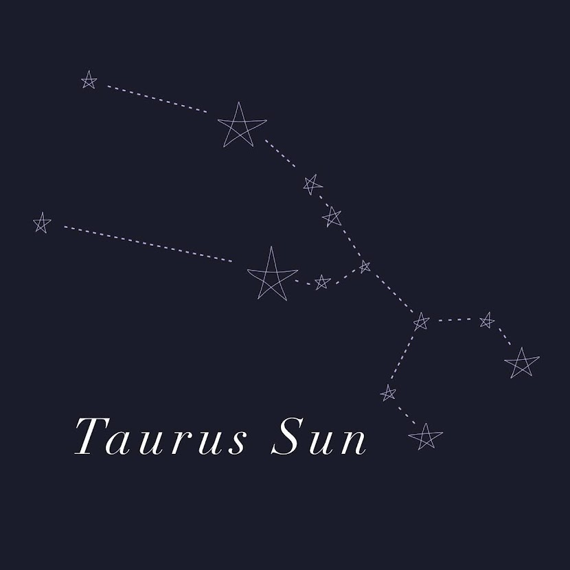
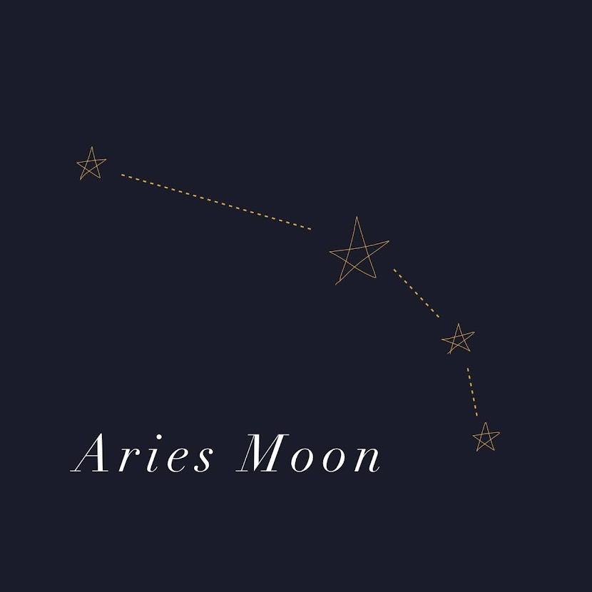
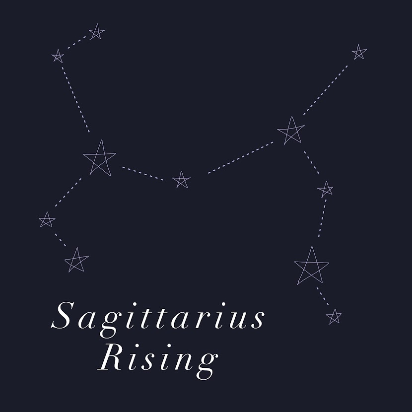
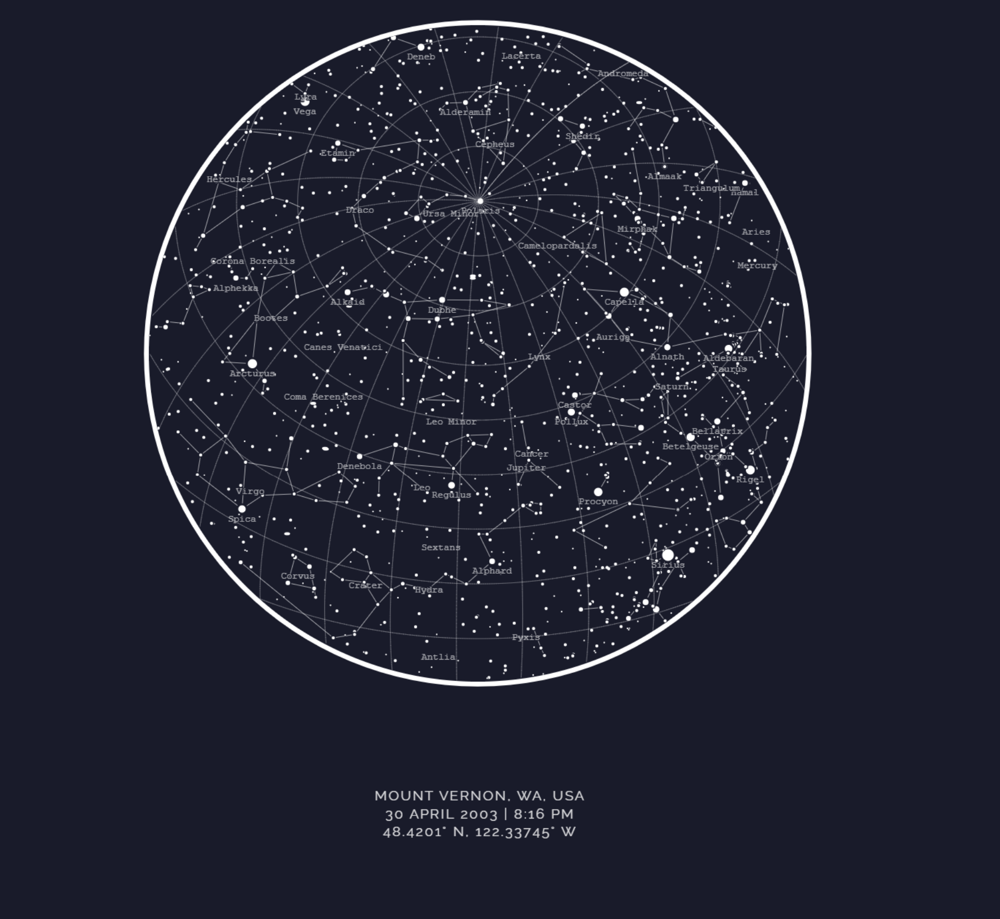

Sun
Your sun sign describes your basic nature and personality traits. Sun signs represent identity
A taurus sun is loyal, dependable and calm. They tend to be characterized by warmth, kindness and generosity – seeking to share the good things in life they have found with others.
Moon
Your moon sign represents your soul. This sign is your subconscious, and the side of yourself you tend to keep hidden.
Aries moon placements are brave, affectionate, and sensitive. They crave admiration and stray away from authority. Aries are likely to have a pronounced need for independence.
Rising
Your rising sign is your social personality. This sign represents your physical body and style.
A Sagittarius rising see's the world as an interesting place to explore. They are bright, sunny, energetic and fun. One of their best characteristics is their enthusiasm and how they love to try new things
Night Sky
What the night sky looked like when you were born
Night Sky
What the night sky looked like when you were born